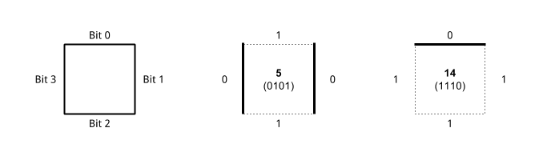
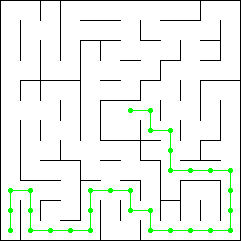

Capstone Project
Machine Learning Engineer Nanodegree
Terence So
October 02, 2016
I. Definition
Project Overview
This project is a simulation of a Micromouse competition. A robot mouse is tasked with plotting a path from a corner of the maze to its center. The robot mouse may make multiple runs in a given maze. In the first run, the robot mouse tries to map out the maze to not only find the center, but also figure out the best paths to the center. In the subsequent run, the robot mouse attempts to reach the center in the fastest time possible using what it has previously learned. This video is an example of a Micromouse competition.
Problem Statement
Game Mechanics
The robot is given two(2) runs. It begins on the lower left corner (0,0) facing north and attempts to reach the goal room in the center of the maze. In both runs, it is required to reach the goal within 1000 turns/time steps. However, the first run is considered an "exploration run" and the robot is allowed to further explore the maze after it reaches the goal. The robot is scored based on the number of turns it takes during each run. In the exploration run, each turn is worth 1/30 points. In the second run, it is worth a full(1) point. A lower score is better.
The Challenge
The objective of this project is to minimize turns taken by the robot to navigate from start to goal. In the ideal case, the robot should always take the shortest path and use optimal moves every run. However, the robot has no prior knowledge of the maze and the shortest path is unknown. Therefore, our task is threefold:
- Reveal enough of the maze to determine the shortest path from start to goal.
- Navigate the robot using the shortest path.
- Use the minimal number of turns while doing (1) and (2).
Metrics
In this project, our main performance metric is already provided – a score which is a total of 1/30th of the turns taken in the first run and the number of turns taken in the second.
We shall also be using supplementary metrics to further evaluate our robot's performance – the number of steps of the chosen path and the number of turns used. Note the difference between a step and a turn: a move from one cell to an adjacent cell is considered one step; a turn can consist of a maximum of 3 steps.
II. Analysis
Data Exploration and Visualization
The Robot
The robot has sensors on the front, left and right. Each turn, each sensor returns the distance to the wall it is facing. The sensors are accurate and contain no noise.
Each turn the robot is allowed to turn left or right but not a full u-turn. It is also allowed to move forward, left, right or reverse up to a maximum of 3 steps from its current position. All turns and moves are exact and contain no noise.
Naturally, the robot cannot move through walls. If it attempts to do so, it will remain in the last valid position no feedback is provided to the robot.
The Mazes
Maze Characteristics
There are three(3) test mazes provided. Each maze is an NxN grid where N is even from 12 to 16. Each maze's outer perimeter is completely bounded. The goal room is always a 2x2 grid in the center of the maze. There is always at least one(1) path from the starting location to the goal room. It is also worth noting that there is always a right wall at the starting location and the robot has no choice but to move forward during its first turn.
Data Representation
Each test maze is stored in a separate text file:
The first line of each file describes the maze dimensions. The next lines are comma delimited numbers that describe a column of the maze. Each number is a 4-bit representation of a cell's walls. Each bit represents the presence of a cell wall: 0 if closed and 1 if open. This is best illustrated in figure below:

It is important to note that the outer perimeter of the maze must be walled. In addition, adjacent cells need to be consistent. For example, if a cell's top side is closed, then the cell above it must have its bottom side closed as well. A portion of a maze is illustrated below:

Maze Visualizations
The following are diagrams of the test mazes. The shortest path is traced in each maze. There are actually multiple shortest paths with equal length, only one is shown for clarity.
Test Maze 01
Size: 12x12
Shortest Path Length: 30

Test Maze 02
Size: 14x14
Shortest Path Length: 43

Test Maze 03
Size: 16x16
Shortest Path Length: 49

Algorithms and Techniques
Finding the Goal Room
It is apparent from our data analysis that once we have the full map of the maze, it is relatively straightforward to find a path to the goal. In fact, we can do it manually by inspection and some trial and error. Algorithmically, there are several ways to do path finding: Dijkstra's, Sample and A* search. All these algorithms achieve the same thing and are actually not very different procedurally. All these algorithms explore a tree-like structure, visiting each node until the shortest path is found. The main difference is efficiency. In this sense, A* tends to do better since it uses a heuristic to explore nodes that are closer to the goal first. For this project, we shall use A*. This solves the first half of our problem.
The other half is that we do not have a map of the maze at the start of the first run. The good news is that we can build this map piecemeal from the data coming in from the robot sensors. We can first assume a maze that has no walls save for its outer perimeter and place walls as we detect them. Combining this with A*, we find that it solves our problem rather neatly.
We can imagine the behavior of our robot with A* when first placed in the starting location. The maze will start out void of walls, its first route will be to simply head straight north and then right towards the goal. However, things don't go according to plan. Every turn, its sensors will pick up new walls and obstacles along its route. The robot will have to come up with a new route each time the map is updated. Eventually though, it will find an opening that will take it to the goal room. The nice thing about A* is that robot will always try to move towards the center.
A*\ Search Algorithm
A brief discussion on the A* Search Algorithm is given here for completeness. The first part of A* is determining the cost of each position in the maze relative to the starting position. The maze can be thought of as a directed graph with the root node being the robot starting position and reachable adjacent cells as child nodes. Starting from the root node, we expand into adjacent nodes adding the cost of one step to each node. We do this recursively, expanding nodes with lower cost first until we reach the goal. Since we always favor expanding nodes with lower cost, we are ensured that we have the lowest possible path cost when we reach the goal.
As mentioned, the main difference of A* is the use of a heuristic to determine which nodes to expand first. When prioritizing nodes to expand, instead of only using the cost of the path to a node it will add a heuristic cost (an estimate of the cost of the cheapest path from the node to the goal). This has the potential to minimize the number of iterations if the goal is reached earlier. In this case, our heuristic is simply the Euclidean distance of a position to the goal.
A completed cost map for Test Maze 01 looks like the following:
[[ 0 1 2 3 4 5 6 7 8 9 10 11]
[ 5 4 3 8 9 8 7 8 9 10 11 12]
[ 6 7 4 7 10 9 8 9 14 13 12 13]
[ 7 6 5 6 11 10 11 10 15 16 17 18]
[ 8 9 10 13 12 13 14 15 16 17 18 19]
[13 12 11 12 13 -1 -1 16 17 18 19 20]
[14 13 12 13 14 -1 30 17 18 19 20 21]
[15 14 15 14 27 28 29 28 19 20 23 22]
[16 17 26 25 26 27 28 27 26 21 22 23]
[17 18 19 24 27 28 27 26 25 24 23 24]
[18 19 20 23 24 -1 -1 -1 26 25 24 25]
[19 20 21 22 23 24 25 26 -1 -1 -1 -1]]
The second part of A* begins when the algorithm reaches the goal position. From the goal positioni, we trace a path back to the starting position by based on the completed cost map. In the above example, we begin at the center with value 30 to 29 to 28 and so forth. Note that there are multiple paths and any of these paths will be equal in length.
Finding the Shortest Path
Now that we can find our way to the goal room, our next concern is to do it in the shortest time possible. We recall that our robot plans optimistically and we can make this work in our favor. When the robot first reaches the goal, the path it took to get there is likely not the shortest. However, the robot will have revealed walls and updated its map accordingly. If we make the robot run back to the start location it will mostly likely choose a different path back – one that runs through unexplored areas of the map since it thinks it will have fewer obstacles that way. By making the robot take multiple trips from the starting location to the goal room, more and more of the map will be revealed as long as the robot thinks that there are possible shorter routes worth exploring. Eventually, the robot will settle on the same route - this is our shortest path.
Here is the robot trying another path after reaching the goal:
Robot Movement
It is important to mention that running into a wall is an extremely undesirable case. While feedback is provided to the UI, it is not provided to the robot. The robot is only given the starting position and sensor information. There is no other way to determine its position in the maze aside from tracking its own moves. If the robot hits a wall, it will fail to localize from then on. Assuming that our charting is accurate and we never instruct the robot to go past obstacles, this should never happen.
There is also the matter of maximizing the use of turns in each time step. The robot can move a maximum of three(3) steps in one direction each turn. We can take advantage of this if our A* route has three(3) or more consecutive steps in the same direction. For example, a route: [North, North, North, East, East] can be compressed into 2 turns by going north - move 3, east - move 2.
Benchmark
In the ideal case, the robot takes the shortest path using max three(3) steps per turn in both runs. The scores in this case are as follows:
| Maze 01 | Maze 02 | Maze 03 | |
|---|---|---|---|
| Size | 12x12 | 14x14 | 16x16 |
| Path Length | 30 | 43 | 49 |
| Turns | 17 | 28 | 29 |
| Score | 17.567 | 28.934 | 29.967 |
While it is unrealistic to expect that we can achieve these scores, it is reasonable to expect to at least be able to find the shortest path. Additionally, the robot should be able to maximize movement and use the minimum amount of turns following the said path. This shall be our minimum baseline performance.
III. Methodology
Data Preprocessing
No data preprocessing is necessary in this project. All input map data and sensor data is valid and accurate.
Implementation
Conventions
In an effort to standardize the representation of heading and orientation, the following table displays the conventions used in this implementation.
| Heading | Index | Angle | Delta |
|---|---|---|---|
| N | 0 | 0 | [ 0, 1] |
| E | 1 | 90 | [ 1, 0] |
| S | 2 | 180 | [ 0, -1] |
| W | 3 | 270 | [-1, 0] |
This is implemented in code with an array named delta:
delta = [[ 0, 1], # up
[ 1, 0], # right
[ 0, -1], # down
[-1, 0]] # left
Maze Class
The Maze class is an encapsulation of the structure of a maze. Internally, it is backed using a 2-D numpy int array. Each element in the array represents a cell. The first dimension is the horizontal x-axis. The second dimension represents the vertical y-axis. The 4-bits of each element indicates whether a wall exists on each side of the cell. If a wall exists, the bit is 0. Otherwise, it is 1. This representation is consistent with the provided test mazes (see Analysis section for details). A numpy array loaded with Test Maze 01 looks like the following figure.
[[ 1 5 7 5 5 5 7 5 7 5 5 6]
[ 3 5 14 3 7 5 15 4 9 5 7 12]
[11 6 10 10 9 7 13 6 3 5 13 4]
[10 9 13 12 3 13 5 12 9 5 7 6]
[ 9 5 6 3 15 5 5 7 7 4 10 10]
[ 3 5 15 14 10 3 6 10 11 6 10 10]
[ 9 7 12 11 12 9 14 9 14 11 13 14]
[ 3 13 5 12 2 3 13 6 9 14 3 14]
[11 4 1 7 15 13 7 13 6 9 14 10]
[11 5 6 10 9 7 13 5 15 7 14 8]
[11 5 12 10 2 9 5 6 10 8 9 6]
[ 9 5 5 13 13 5 5 12 9 5 5 12]]
This class is generally used to determine whether a location is within the maze bounds(), determining whether a particular side of a cell is passable(), and used to block_cell() sides.
AStarPlanner Class
This class is an implementation the A* search algorithm. It uses a euclidean distance to the center of the maze as a heuristic(). Using a maze, start and goal locations, the function plan() runs A* and returns a route.
def plan(self):
'''
Do A* search. Return an optimal route.
'''
x, y = self.start
opened = [(self.heuristic(x, y), 0, x, y)]
closed = np.full(self.map.shape(), -1, dtype=np.int)
closed[x][y] = 0
route = None
while len(opened) > 0:
opened.sort()
f, g, x, y = opened.pop(0)
if (x, y) in self.goal:
# We've found the goal. Backtrace a route to the starting location
route = []
step = closed[x][y]
i = 0
while step != 0:
while True:
x2 = x - delta[i][0]
y2 = y - delta[i][1]
if self.map.passable(x2, y2, i) and closed[x2][y2] == step-1:
# check if our planner went through this cell and if it was the previous step
route.append(i)
step -= 1
x = x2
y = y2
break
else:
i = (i + 1) % 4
route.reverse()
break
else:
for i in range(len(delta)):
x2 = x + delta[i][0]
y2 = y + delta[i][1]
if self.map.passable(x, y, i) and closed[x2][y2] < 0:
# passable and we haven't covered this location before
g2 = g + self.cost
f2 = g2 + self.heuristic(x2, y2)
opened.append([f2, g2, x2, y2])
closed[x2][y2] = g2
# print closed
self.closed = closed
return route
The route is an array of steps to reach the goal. Each element is one of four(4) directions: N, S, E and W as per our convention. The route for Test Maze 01 is as follows.
[0, 0, 1, 2, 2, 1, 1, 1, 0, 0, 1, 1, 2, 1, 2, 1, 1, 1, 1, 0, 0, 0, 3, 3, 3, 0, 0, 3, 0, 3]
Robot Class
This class is the meat of our implementation. It uses the maze and planner classes to determine the correct move at each time step. Moreover, it controls meta-planning - setting start and goal locations during exploration and when to reset for the test run.
The section of the code that turns the route into rotation and movement at each time step is worth discussing:
# turn right by default when a u-turn is needed
rotations = [0, 1, -1, -1]
movements = [1, 1, 0, 1]
h = (self.route[self.route_i] - self.heading + 4) % 4
rotation = rotations[h]
movement = movements[h]
if movement > 0:
self.route_i += 1
# maximize movement
while self.route_i < len(self.route) and \
self.route[self.route_i] == self.route[self.route_i-1] and \
movement < 3:
self.route_i += 1
movement += 1
self.move(rotation, movement)
rotation *= 90
self.steps += movement
The first part of this code snippet determines the appropriate rotation and movement for the given step in the route plus the robot's current heading. Note that we never make the robot go in reverse. Going in reverse is risky business, as we are never really sure that our map is already complete, and running into a wall will completely tilt our localization. There is likely a way to handle this elegantly, but u-turns are rare and only happen during exploration (since we already have an optimal route when we go into the test run, and optimal routes have no u-turns). At best we shave a point off the final score, but it hardly seems worth the extra code.
The next part of the snippet maximizes the turn, allowing the robot to move up to a maximum of three steps. It checks the route for consecutive moves in the same direction.
Visualizer Class
Implemented using the turtle library, the Visualizer is a straightforward class for drawing the maze, path and robot to the screen. The following is a screenshot of the visualizer in action.

Refinement
Our robot implementation is actually an optimistic reinforcement learning algorithm. The exploration run is the robot's training phase. During this phase, we make the robot take multiple back and forth trips from the start and goal locations. The following is code snippet from the Robot's next_move() function that implements this.
reset = False
# update map based on sensors
# update plan if necessary
if self.update_map(sensors): # returns true if map changed
self.update_plan()
if self.route == None:
# No route to goal
raise Exception('No route to goal!')
elif self.route_i < len(self.route):
# We are still en route
pass
else:
# We've reached the goal
if self.steps <= self.steps_expected:
# Bot is ready for the actual run
self.reset()
reset = True
self.practice = False
self.flipflop = True
# Flip flop between the start location and goal until bot is already
# taking the optimal path from start -> goal
elif self.flipflop:
# make it run back to the start location
self.planner = AStarPlanner(self.maze, self.loc, [(0, 0)])
self.flipflop = not self.flipflop
else:
# make it do one more trip to the goal
self.planner = AStarPlanner(self.maze, self.loc)
self.flipflop = not self.flipflop
self.update_plan()
self.steps_expected = len(self.route)
Every trip the robot takes (start to goal or vice versa), the robot plots a course that seems shortest and records its expected number of steps to get to the goal. If the number of steps used exceed the expectation, it means obstacles were encountered and the robot was forced to reroute. If it does not, it means it has found the shortest path and the robot ceases the exploration run. No hyper-parameters are necessary.
IV. Results
Model Evaluation and Validation
The following detailed statistics were gathered from each trip of the robot.
Test Maze 01
| Trip | 01 | 02 | 03 | 04 | 05 | Test |
|---|---|---|---|---|---|---|
| Steps Expected | - | 16 | 26 | 28 | 30 | 30 |
| Steps Used | 44 | 44 | 32 | 32 | 30 | 30 |
| Turns Used | 40 | 44 | 24 | 23 | 17 | 17 |
Test Maze 02
| Trip | 01 | 02 | 03 | 04 | 05 | Test |
|---|---|---|---|---|---|---|
| Steps Expected | - | 23 | 35 | 41 | 43 | 43 |
| Steps Used | 81 | 53 | 51 | 45 | 43 | 43 |
| Turns Used | 78 | 46 | 37 | 28 | 27 | 27 |
Test Maze 03
| Trip | 01 | 02 | 03 | 04 | 05 | Test |
|---|---|---|---|---|---|---|
| Steps Expected | - | 21 | 45 | 47 | 49 | 49 |
| Steps Used | 91 | 77 | 63 | 51 | 49 | 49 |
| Turns Used | 76 | 63 | 39 | 30 | 30 | 29 |
Results Summary
| Maze | 01 | 02 | 03 |
|---|---|---|---|
| Train Trips | 5 | 5 | 5 |
| Train Turns | 153 | 221 | 243 |
| Test Path Length | 30 | 43 | 49 |
| Test Turns | 17 | 27 | 29 |
| Score | 22.100 | 34.367 | 37.100 |
The results are good. In every run, the robot successfully finds the goal room. In addition, the robot successfully determines the shortest path on the 5th training trip. Another observation is that steps expected gets progressively worse every trip while steps used gets progressively better. This is a sign that the robot is adjusting its expectations based on new data.
Justification
The following table shows our results against our benchmarks.
| Maze | 01 | 01 | 02 | 02 | 03 | 03 |
|---|---|---|---|---|---|---|
| Actual | Benchmark | Actual | Benchmark | Actual | Benchmark | |
| Path Length | 30 | 30 | 43 | 43 | 49 | 49 |
| Train Turns | 153 | 17 | 221 | 28 | 243 | 29 |
| Test Turns | 17 | 17 | 27 | 28 | 29 | 29 |
| Score | 22.100 | 17.567 | 34.367 | 28.934 | 37.100 | 29.967 |
We see that our results are very close or equal to our ideal benchmark. We also verify that we have achieved our baseline performance which is to find the shortest path and use minimal turns in the test run. There is a difference in score however, and this is caused by the number of turns used to explore the maze in the first run.
V. Conclusion
Free-Form Visualization
This is a test maze with a simple solution, but illustrates a certain quirk of our implementation of the A* planner.
The robot will eventually arrive at the simple solution, but in the training stage it will tend to explore the first 4 columns of dead ends. Illustrated here:
While this isn't a show stopper, a possible solution to minimize exploration in cases like this is to make the planner to prefer routes with fewer turns. This is beneficial in another way - straight routes can be further taken advantage of using multiple steps per turn.
Reflection
I did this coming fresh from the Artificial Intelligence for Robotics course so I already had general idea of how to get the robot to the goal room. Getting the robot to perform well was another story and I didn't have a solution for that in the onset. I figured the best way to find out was to learn by doing, so I set out building a prototype with a few guidelines:
- build a map from sensor data
- use A* for path finding
- move one step at a time and no reverse
- and most importantly, DON'T hit any walls
Once I was consistently getting the robot to the goal room and finishing the course without any mishaps, it was time to look at the scores and performance. During one of my tests, I observed something curious - sometimes the robot will do worse on the second run. At this point, the robot was only programmed to get to the goal room, reset, and get to the goal room again. With the help of some visualization, I discovered that the robot was always taking a different path in the second run. It was in fact trying to find a better route all by itself. This was how the back and forth trips from start to goal came to be.
After some refactoring, the only remaining bit of optimization needed was making the robot take multiple steps per turn. This was easily accomplished by counting route steps that were in the same direction.
One final thing - there was this perplexing bug where the robot would get stuck moving back and forth between the same two positions, and it took me a while to solve it. At times the planner would produce these 'mirror' routes - the first move from one position would lead to the other position, and vice versa. This can happen if the planner is run every time step. The solution was to only update the route when the map was updated, forcing the robot to 'follow through' with the original route.
Improvement
Thinking within the confines of this simulation, the first change I would make is slap a fourth sensor facing the back of the robot. This would allow us to go in reverse without a lot more code and shave off some more points during exploration. Secondly, an improvement that has been mentioned in an earlier section, is to make the path planner favor routes with fewer turns. Thirdly, something I considered and experimented on briefly is early stopping. From the results, we can see that the route used in the last training run is the same one used in the test run, so it's actually superfluous. We could stop at the 4th run and save the points. One way to do this is to add an error margin - say 10%, to the training stop condition. This actually worked lowering a point on Maze 02 and 03, but seems too unreliable to include without testing on more mazes. Finally, there's the possibility of using expected turns to evaluate paths instead of steps.
If we were to work with an actual robotic mouse, adapting our implementation would depend on how reliable the hardware is. Micromouse competitions are very specific regarding wall and grid specifications. If the motor controller can guarantee movement accuracy and if a lower layer filter can give us clean sensor data, then we can pretty much use the same code for high level path planning. Basically, we abstract away the non-idealities. If that is not possible, then we may have to expand the grid size and consider that the robot and walls can occupy several cells. Collision detection will be a bit different, but A* can still work in this case, albeit with a larger grid.